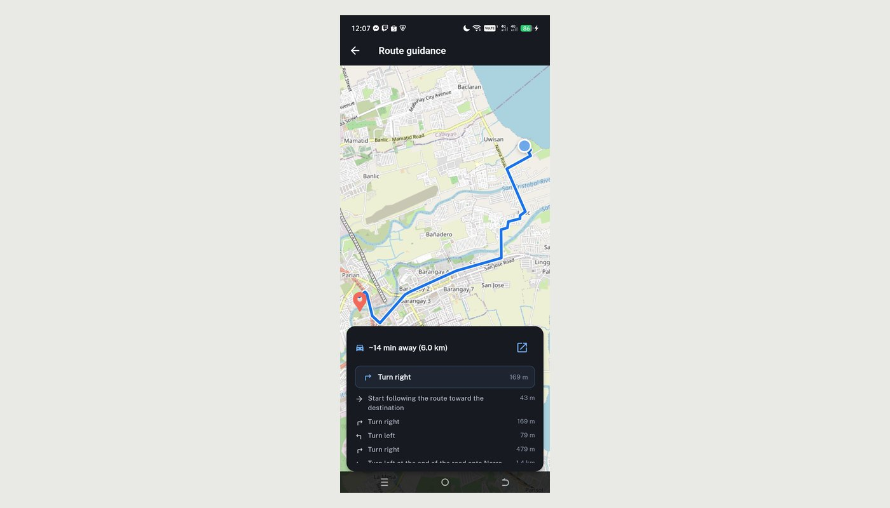
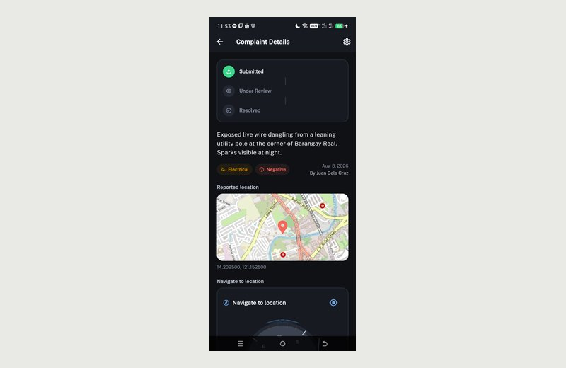
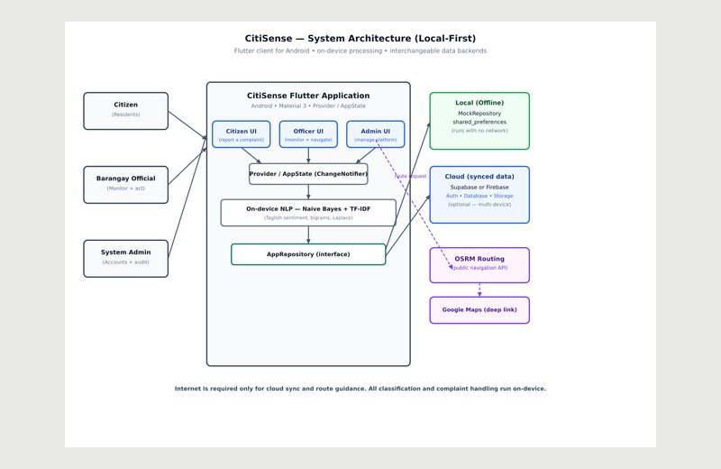

CitiSense
Urban feedback app for Calamba City barangays, built with Flutter, Firebase and Cloudinary.

Problem and description
CitiSense lets citizens report local issues with photos or videos and a map location. Officials resolve those reports with proof photos, and an admin dashboard keeps a log of what happened.
The app uses Flutter with Firebase and Cloudinary. It includes OpenStreetMap mapping, location and camera access, role based views and signed delivery URLs for video.
Tools used
- Flutter
- Dart
- Firebase
- Cloudinary
- OpenStreetMap
Source: the CitiSense repository on GitHub.
Catalog breakdown
| Category | Products | Variants |
|---|---|---|
| Total | 120 | 257 |

